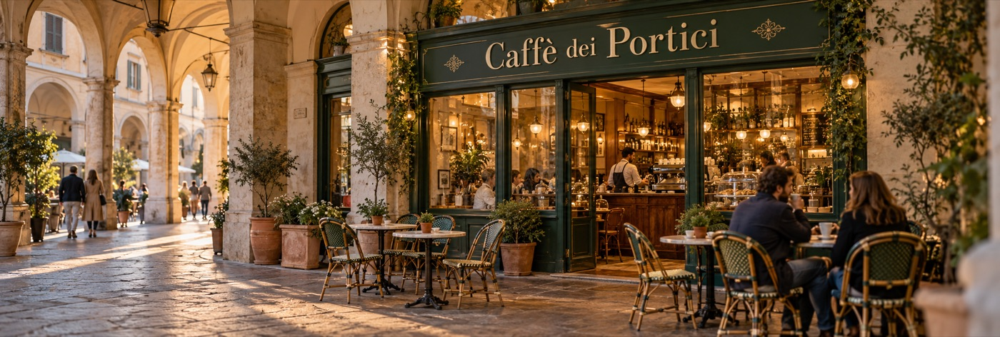
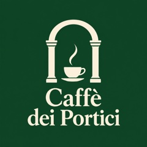
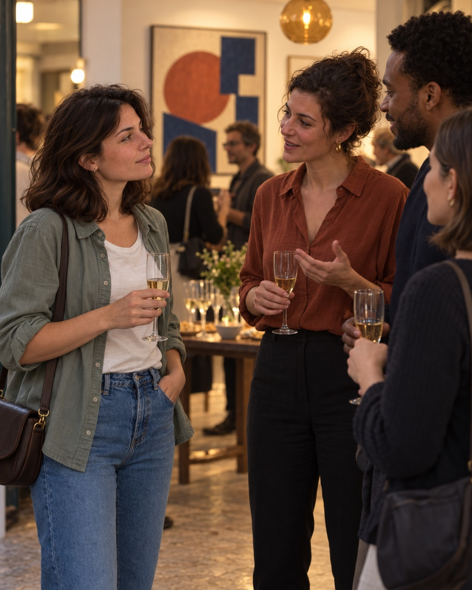

Atmosfera calda, musica bellissima e un aperitivo curato. Ci torno con gli amici.
Profilo attività
Un profilo che porta persone, non solo stelle.
Prima di tutto quello che serve a chi vuole venire: orari, contatti e dove trovarvi. Poi eventi, attività e recensioni di chi ha partecipato davvero. Nell’area privata l’attività gestisce team e campagne, e capisce chi la sceglie.


Caffè dei PorticiBar e Caffetteria
Colazioni, aperitivi e musica dal vivo sotto i portici del centro. Per prenotare scrivi a info@caffedeiportici.it.
OggiAperto
Lunedì07:00–20:30
Martedì07:00–20:30
Mercoledì07:00–20:30
Giovedì07:00–20:30
Venerdì07:00–23:30
Sabato07:30–23:30
Domenica08:00–14:00
IndirizzoVia dei Portici 12, L’Aquila · a 0,4 km
Telefono+39 0862 123 4567
Whatsapp+39 351 234 5678
Emailinfo@caffedeiportici.it
Sito webwww.caffedeiportici.it
Dietro il bancone
2 MAR 2026 Il nostro teamQuattro persone, un bancone e tante storie. Ogni mattina apriamo le porte a chi vive il centro, e ogni sera le chiudiamo con la musica.
Ordina perPiù recente
Nuovo menù d’autunnoPubblicato il 15/01/2026
Cerchiamo musicisti per il venerdìPubblicato il 14/01/2026
Aperitivo per gli studentiPubblicato il 12/01/2026
In EvidenzaVenerdì 30 Gennaio, ore 19:30Jazz al tramonto sotto i portici
Gli altri eventi
DegustazioneVini abruzzesi e prodotti del territorio6 Febbraio 2026
MusicaDj set al tramonto13 Febbraio 2026

Ogni sabato, ore 10:006 postiCorso di latte art
Ogni mercoledì, ore 18:30GratisCaffè in lingua inglese
4,6★★★★★276 recensioni
Qualità del servizio4,8
Cura e qualità dell’esperienza4,6
Professionalità e disponibilità4,7
Valore rispetto al costo4,3
Ordina perPiù recente
Tavoli comodi, caffè ottimo e personale gentile. La mattina è tranquillo.